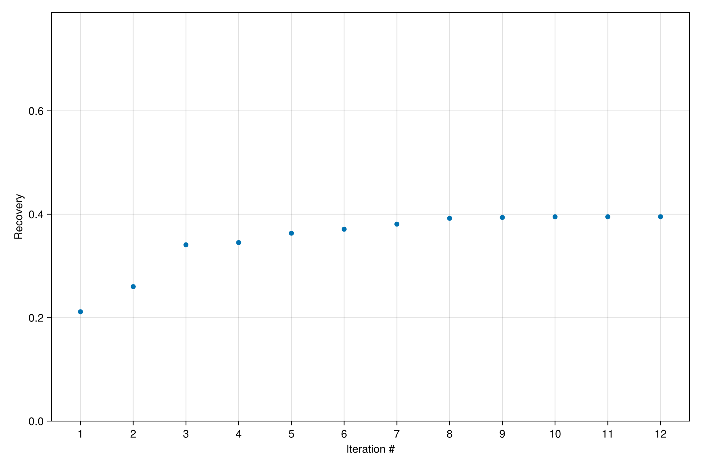

Optimization of simulation models
We demonstrate optimization of a cyclic Vacuum Swing Adsorption (VSA) simulation model in Mocca. The objective is to maximize the CO2 recovery of the process, i.e., the fraction of the input CO2 we are able to capture. We do this by tuning:
- Feed velocity
- Low pressure
- Intermediate pressure
We leverage the powerful and flexible optimization functionality of Jutul. For more details about the VSA modelling, see the Haghpanah cyclic VSA example.
Setting up the optimization problem
Start by importing the necessary modules
import Mocca
import Jutul
import Jutul.DictOptimization: optimize, DictParameters, free_optimization_parameter!We create a setup function for making simulation cases. This is needed by the optimizer so that it knows how to set up a new simulation from the current iteration of the optimization parameters.
function setup_case(prm, step_info = missing)
param_dict_symb = Dict(Symbol(k) => v for (k, v) in prm)
RealT = valtype(param_dict_symb)
constants, info = Mocca.parse_input(Mocca.haghpanah_cyclic_input(); typeT=RealT)
info.num_cycles = 3;
for (k, v) in param_dict_symb
print(k)
print(v)
setproperty!(constants, Symbol(k), v)
end
case, = Mocca.setup_mocca_case(constants, info)
return case
end;Create a helper function for getting timing for the stages and the number of cycles
function cycle_definition()
t_press = 15.0
t_ads = 15.0
t_blow = 30.0
t_evac = 40.0
t_stage = [t_press, t_ads, t_blow, t_evac]
num_cycles = 3
return (t_stage, num_cycles)
end;Define the objective function. We need access to all timesteps at the same time to calculate the recovery. Jutul allows us to do this using a global objective function.
function objective_func(model, state0, states, step_infos, forces, input_data)
total_co2_flux_in = 0.0
total_co2_flux_out = 0.0
co2_idx = findfirst(==("CO2"), model.system.component_names)
t_stage, num_cycles = cycle_definition()
start_time_last_cycle = sum(t_stage)*(num_cycles-1)
for (step_info, state, force_outer) in zip(step_infos, states, forces)
dt = step_info[:dt]
time = step_info[:time]
if time >= start_time_last_cycle # We only use the last cycle for calculating the objective, once the system has more or less stabilized
force = force_outer.bc
if force isa Mocca.PressurisationBC
mass_flux = Mocca.mass_flux_left(state, model, time, force)
total_co2_flux_in -= mass_flux[co2_idx] * dt
end
if force isa Mocca.AdsorptionBC
mass_flux = Mocca.mass_flux_left(state, model, time, force)
total_co2_flux_in -= mass_flux[co2_idx] * dt
end
if force isa Mocca.EvacuationBC
mass_flux = Mocca.mass_flux_left(state, model, time, force)
total_co2_flux_out -= mass_flux[co2_idx] * dt
end
end
end
recovery = total_co2_flux_out/total_co2_flux_in
return recovery
end
wrapped_global_objective = Jutul.WrappedGlobalObjective(objective_func);We use the original parameter values as a starting point for the optimization
constants_ref, = Mocca.parse_input(Mocca.haghpanah_cyclic_input(); typeT=Float64)
prm_guess = Dict(
"v_feed" => constants_ref.v_feed,
"p_intermediate" => constants_ref.p_intermediate,
"p_low" => constants_ref.p_low
)Dict{String, Float64} with 3 entries:
"p_low" => 10000.0
"v_feed" => 0.37
"p_intermediate" => 20000.0Specify which parameters we wish to optimize and set limits for their final values. Relative change limits can also be specified.
bar = Jutul.si_unit(:bar)
dprm = DictParameters(prm_guess)
free_optimization_parameter!(dprm, "v_feed"; abs_min = 0.1, abs_max = 2.0)
free_optimization_parameter!(dprm, "p_intermediate"; abs_min = 0.05bar, abs_max = 0.5bar)
free_optimization_parameter!(dprm, "p_low"; abs_min = 0.05bar, abs_max = 0.5bar)DictParameters with 3 parameters (3 active), and 0 multipliers:
Active optimization parameters
┌────────────────┬───────────────┬───────┬────────┬─────────┐
│ Name │ Initial value │ Count │ Min │ Max │
├────────────────┼───────────────┼───────┼────────┼─────────┤
│ v_feed │ 0.37 │ 1 │ 0.1 │ 2.0 │
│ p_intermediate │ 20000.0 │ 1 │ 5000.0 │ 50000.0 │
│ p_low │ 10000.0 │ 1 │ 5000.0 │ 50000.0 │
└────────────────┴───────────────┴───────┴────────┴─────────┘
No inactive optimization parameters.
No multipliers set.
Run the optimization
We call the optimizer provided by Jutul. Note that we are maximizing the objective function.
prm_opt = optimize(dprm, wrapped_global_objective, setup_case;
max_it=10,
maximize=true,
info_level=-1
)Dict{String, Float64} with 3 entries:
"p_low" => 5000.0
"v_feed" => 0.684246
"p_intermediate" => 50000.0We can plot the optimization history to see how the objective function has changed throughout the optimization
Mocca.plot_optimization_history(dprm; yscale = identity, ylabel = "Recovery")
Finally, we look at the optimized parameters. We see that the optimized intermediate and low pressure values have reached their prescribed limits, meaning that we could have increased the objective function further if we were allowed to change the limits.
dprmDictParameters with 3 parameters (3 active), and 0 multipliers:
Active optimization parameters
┌────────────────┬───────────────┬───────┬────────┬─────────┬───────────────────
│ Name │ Initial value │ Count │ Min │ Max │ Optimized value ⋯
├────────────────┼───────────────┼───────┼────────┼─────────┼───────────────────
│ v_feed │ 0.37 │ 1 │ 0.1 │ 2.0 │ 0.684 ⋯
│ p_intermediate │ 20000.0 │ 1 │ 5000.0 │ 50000.0 │ 50000.0 ⋯
│ p_low │ 10000.0 │ 1 │ 5000.0 │ 50000.0 │ 5000.0 ⋯
└────────────────┴───────────────┴───────┴────────┴─────────┴───────────────────
1 column omitted
No inactive optimization parameters.
No multipliers set.
Example on GitHub
If you would like to run this example yourself, it can be downloaded from the Mocca.jl GitHub repository.
This page was generated using Literate.jl.